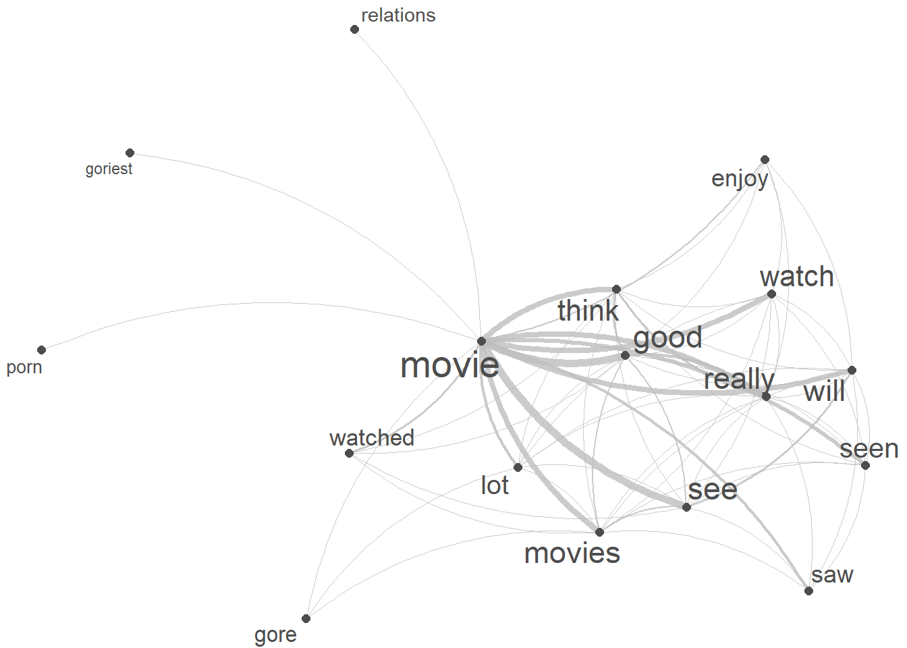

Section 7 Networks and Collocation Analysis
In this part of the workshop, we will extract collocatiosn and display tem in a network.
7.1 Networks
Networks are a powerful method for visualizing relationships among various elements, such as authors, characters, or words (Silge and Robinson 2017, 131–37). Network analysis goes beyond mere visualization; it’s a technique for uncovering patterns and structures within complex systems. In essence, network analysis represents relationships as nodes (elements) connected by edges (relationships) which provides a unique perspective for understanding the connections and interactions within your data.
Networks, also known as graphs, are powerful tools that represent relationships among entities. They consist of nodes (often depicted as dots) and edges (typically represented as lines) and can be categorized as directed or undirected networks.
- In directed networks, the direction of edges is captured, signifying the flow or relationship from one node to another. An example of a directed network is the trade relationships between countries, where arrows on the edges indicate the direction of exports. The thickness of these arrows can also encode additional information, such as the frequency or strength of the relationship.
- Undirected networks, on the other hand, represent symmetric relationships where the connection between two nodes is mutual. For example, in a social network, the connections between individuals are often undirected, as the relationship between friends is reciprocal.
Network analysis involves exploring the structure and properties of these networks. One key concept is centrality, which identifies the most important nodes in a network. Centrality metrics, such as degree centrality (number of connections) and betweenness centrality (importance in connecting other nodes), help unveil the significance of specific nodes.
7.2 Collocations
Collocations are like linguistic buddies. They’re those word pairs that just seem to go hand in hand, like Merry Christmas. You see, these words have a special relationship – they occur together way more often than if words were just randomly strung together in a sentence.
Before we start tough, it is important to understand that identifying words pairs (w1 and w2) that collocate (i.e. collocations) and determining their association strength (a measure of how strongly attracted words are to each other) is based on the co-occurrence frequencies of word pairs in a contingency table (see below, O is short for observed frequency).
| w2 present | w2 absent | ||
|---|---|---|---|
| w1 present | O11 | O12 | = R1 |
| w1 absent | O21 | O22 | = R2 |
| = C1 | = C2 | = N |
In the following, we will extract collocations from the sentences in our example text. In a first step, we split our example text into sentences and clean the data (removing punctuation, converting to lower case, etc.).
# load reviews
list.files(here::here("data/reviews_pos"), full.names = T, pattern = ".*txt") %>%
purrr::map_chr(~ readr::read_file(.)) %>%
str_c(collapse = " ") %>%
str_replace_all("<.*?>", " ") %>%
# split text into sentences
tokenizers::tokenize_sentences() %>%
# unlist sentences
unlist() %>%
# remove non-word characters
stringr::str_replace_all("\\W", " ") %>%
stringr::str_replace_all("[^[:alnum:] ]", " ") %>%
# remove superfluous white spaces
stringr::str_squish() %>%
# convert to lower case and save in 'sentences' object
tolower() -> sentences
# inspect
sentences %>%
as.data.frame() %>%
head(10)## .
## 1 one of the other reviewers has mentioned that after watching just 1 oz episode you ll be hooked
## 2 they are right as this is exactly what happened with me
## 3 the first thing that struck me about oz was its brutality and unflinching scenes of violence which set in right from the word go
## 4 trust me this is not a show for the faint hearted or timid
## 5 this show pulls no punches with regards to drugs sex or violence
## 6 its is hardcore in the classic use of the word
## 7 it is called oz as that is the nickname given to the oswald maximum security state penitentary
## 8 it focuses mainly on emerald city an experimental section of the prison where all the cells have glass fronts and face inwards so privacy is not high on the agenda
## 9 em city is home to many
## 10 aryans muslims gangstas latinos christians italians irish and more so scuffles death stares dodgy dealings and shady agreements are never far awayNext, we tabulate the data and reformat it so that we have the relevant information to calculate the association statistics (word 1 and word 2 as well as O11, O12, O21, and O22).
# tokenize the 'sentences' data using quanteda package
sentences %>%
quanteda::tokens(remove_punct = T,
remove_symbols = T,
remove_numbers = T) %>%
# remove stopwords
tokens_remove(stopwords("en")) %>%
# create a document-feature matrix (dfm) using quanteda
quanteda::dfm() %>%
# create a feature co-occurrence matrix (fcm) without considering trigrams
quanteda::fcm(tri = FALSE) %>%
# tidy the data using tidytext package
tidytext::tidy() %>%
# rearrange columns for better readability
dplyr::relocate(term, document, count) %>%
# rename columns for better interpretation
dplyr::rename(w1 = 1,
w2 = 2,
O11 = 3) -> coll_basic
# inspect
coll_basic %>%
as.data.frame() %>%
head(10) ## w1 w2 O11
## 1 one one 92
## 2 one reviewers 4
## 3 one mentioned 6
## 4 one watching 25
## 5 one just 67
## 6 one oz 2
## 7 one episode 14
## 8 one ll 7
## 9 one hooked 3
## 10 one right 12We now enhance our table by calculating all observed frequencies (O11, O12, O21, O22) as well as row totals (R1, R2), column totals (C1, C2), and the overall total (N).
# calculate the total number of observations (N)
coll_basic %>% dplyr::mutate(N = sum(O11)) %>%
# calculate R1, O12, and R2
dplyr::group_by(w1) %>%
dplyr::mutate(R1 = sum(O11),
O12 = R1 - O11,
R2 = N - R1) %>%
dplyr::ungroup(w1) %>%
# calculate C1, O21, C2, and O22
dplyr::group_by(w2) %>%
dplyr::mutate(C1 = sum(O11),
O21 = C1 - O11,
C2 = N - C1,
O22 = R2 - O21) -> colldf
# inspect
colldf %>%
as.data.frame() %>%
head(10)## w1 w2 O11 N R1 O12 R2 C1 O21 C2 O22
## 1 one one 92 1899996 15293 15201 1884703 15293 15201 1884703 1869502
## 2 one reviewers 4 1899996 15293 15289 1884703 194 190 1899802 1884513
## 3 one mentioned 6 1899996 15293 15287 1884703 418 412 1899578 1884291
## 4 one watching 25 1899996 15293 15268 1884703 2299 2274 1897697 1882429
## 5 one just 67 1899996 15293 15226 1884703 7671 7604 1892325 1877099
## 6 one oz 2 1899996 15293 15291 1884703 145 143 1899851 1884560
## 7 one episode 14 1899996 15293 15279 1884703 859 845 1899137 1883858
## 8 one ll 7 1899996 15293 15286 1884703 1518 1511 1898478 1883192
## 9 one hooked 3 1899996 15293 15290 1884703 101 98 1899895 1884605
## 10 one right 12 1899996 15293 15281 1884703 1591 1579 1898405 1883124We could calculate all collocations in the corpus (based on co-occurrence within the same sentence) or we can find collocations of a specific term - here, we will find collocations fo the term movie.
Now that we have all the relevant information, we will reduce the data and add additional information to the data so that the computing of the association measures runs smoothly.
# reduce and complement data
colldf %>%
# determine Term
dplyr::filter(w1 == "movie",
# set minimum number of occurrences of w2
(O11+O21) > 10,
# set minimum number of co-occurrences of w1 and w2
O11 > 5) %>%
dplyr::rowwise() %>%
dplyr::mutate(E11 = R1 * C1 / N,
E12 = R1 * C2 / N,
E21 = R2 * C1 / N,
E22 = R2 * C2 / N) -> colldf_redux
# inspect
colldf_redux %>%
as.data.frame() %>%
head(10)## w1 w2 O11 N R1 O12 R2 C1 O21 C2 O22
## 1 movie one 191 1899996 19401 19210 1880595 15293 15102 1884703 1865493
## 2 movie reviewers 6 1899996 19401 19395 1880595 194 188 1899802 1880407
## 3 movie mentioned 7 1899996 19401 19394 1880595 418 411 1899578 1880184
## 4 movie watching 49 1899996 19401 19352 1880595 2299 2250 1897697 1878345
## 5 movie just 103 1899996 19401 19298 1880595 7671 7568 1892325 1873027
## 6 movie ll 21 1899996 19401 19380 1880595 1518 1497 1898478 1879098
## 7 movie right 12 1899996 19401 19389 1880595 1591 1579 1898405 1879016
## 8 movie exactly 9 1899996 19401 19392 1880595 723 714 1899273 1879881
## 9 movie first 60 1899996 19401 19341 1880595 5206 5146 1894790 1875449
## 10 movie thing 28 1899996 19401 19373 1880595 2156 2128 1897840 1878467
## E11 E12 E21 E22
## 1 156.157957 19244.84 15136.8420 1865458
## 2 1.980948 19399.02 192.0191 1880403
## 3 4.268229 19396.73 413.7318 1880181
## 4 23.475259 19377.52 2275.5247 1878319
## 5 78.329150 19322.67 7592.6709 1873002
## 6 15.500411 19385.50 1502.4996 1879093
## 7 16.245819 19384.75 1574.7542 1879020
## 8 7.382607 19393.62 715.6174 1879879
## 9 53.158852 19347.84 5152.8411 1875442
## 10 22.015076 19378.98 2133.9849 1878461Now we can calculate the collocation statistics (the association strength).
colldf_redux %>%
# determine number of rows
dplyr::mutate(Rws = nrow(.)) %>%
# work row-wise
dplyr::rowwise() %>%
# calculate fishers' exact test
dplyr::mutate(p = as.vector(unlist(fisher.test(matrix(c(O11, O12, O21, O22),
ncol = 2, byrow = T))[1]))) %>%
# extract AM
# 1. bias towards top left
dplyr::mutate(btl_O12 = ifelse(C1 > R1, 0, R1-C1),
btl_O11 = ifelse(C1 > R1, R1, R1-btl_O12),
btl_O21 = ifelse(C1 > R1, C1-R1, C1-btl_O11),
btl_O22 = ifelse(C1 > R1, C2, C2-btl_O12),
# 2. bias towards top right
btr_O11 = 0,
btr_O21 = R1,
btr_O12 = C1,
btr_O22 = C2-R1) %>%
# 3. calculate AM
dplyr::mutate(upp = btl_O11/R1,
low = btr_O11/R1,
op = O11/R1) %>%
dplyr::mutate(AM = op / upp) %>%
# remove superfluous columns
dplyr::select(-btr_O21, -btr_O12, -btr_O22, -btl_O12, -btl_O11, -btl_O21, -btl_O22, -btr_O11) %>%
# extract x2 statistics
dplyr::mutate(X2 = (O11-E11)^2/E11 + (O12-E12)^2/E12 + (O21-E21)^2/E21 + (O22-E22)^2/E22) %>%
# extract association measures
dplyr::mutate(phi = sqrt((X2 / N)),
MI = log2(O11 / E11),
DeltaP12 = (O11 / (O11 + O12)) - (O21 / (O21 + O22)),
DeltaP21 = (O11 / (O11 + O21)) - (O21 / (O12 + O22)),
LogOddsRatio = log(((O11 + 0.5) * (O22 + 0.5)) / ( (O12 + 0.5) * (O21 + 0.5) ))) %>%
# determine Bonferroni corrected significance
dplyr::mutate(Sig_corrected = dplyr::case_when(p / Rws > .05 ~ "n.s.",
p / Rws > .01 ~ "p < .05*",
p / Rws > .001 ~ "p < .01**",
p / Rws <= .001 ~ "p < .001***",
T ~ "N.A.")) %>%
# round p-value
dplyr::mutate(p = round(p, 5)) %>%
# filter out non significant results
dplyr::filter(Sig_corrected != "n.s.",
# filter out instances where the w1 and w2 repel each other
E11 < O11) %>%
# arrange by phi (association measure)
dplyr::arrange(-AM) %>%
# remove superfluous columns
dplyr::select(-any_of(c("TermCoocFreq", "AllFreq", "NRows", "E12", "E21",
"E22", "O12", "O21", "O22", "R1", "R2", "C1", "C2"))) -> assoc_tb
# inspect
assoc_tb %>%
as.data.frame() %>%
head(10)## w1 w2 O11 N E11 Rws p upp low
## 1 movie dogma 6 1899996 0.4594983 683 0.00001 0.002319468 0
## 2 movie critic 6 1899996 0.4799205 683 0.00001 0.002422556 0
## 3 movie horehounds 6 1899996 0.6739309 683 0.00006 0.003401887 0
## 4 movie depressing 6 1899996 0.6739309 683 0.00006 0.003401887 0
## 5 movie goriest 7 1899996 0.7964638 683 0.00002 0.004020411 0
## 6 movie pegg 8 1899996 1.2865953 683 0.00005 0.006494511 0
## 7 movie porn 16 1899996 2.6446682 683 0.00000 0.013349827 0
## 8 movie ledger 6 1899996 1.0211074 683 0.00060 0.005154373 0
## 9 movie laughter 8 1899996 1.3682839 683 0.00008 0.006906860 0
## 10 movie makers 6 1899996 1.0823739 683 0.00081 0.005463636 0
## op AM X2 phi MI DeltaP12
## 1 0.0003092624 0.13333333 67.49661 0.005960252 3.706831 0.0002885243
## 2 0.0003092624 0.12765957 64.14895 0.005810566 3.644095 0.0002874608
## 3 0.0003092624 0.09090909 42.52759 0.004731066 3.154290 0.0002773576
## 4 0.0003092624 0.09090909 42.52759 0.004731066 3.154290 0.0002773576
## 5 0.0003608061 0.08974359 48.81888 0.005068945 3.135674 0.0003230521
## 6 0.0004123499 0.06349206 35.39402 0.004316071 2.636442 0.0003496038
## 7 0.0008246998 0.06177606 68.14826 0.005988955 2.596913 0.0006954853
## 8 0.0003092624 0.06000000 24.52869 0.003593030 2.554828 0.0002592782
## 9 0.0004123499 0.05970149 32.47608 0.004134333 2.547632 0.0003453498
## 10 0.0003092624 0.05660377 22.57436 0.003446921 2.470764 0.0002560877
## DeltaP21 LogOddsRatio Sig_corrected
## 1 0.13331281 2.769783 p < .001***
## 2 0.12763799 2.720390 p < .001***
## 3 0.09087751 2.343430 p < .001***
## 4 0.09087751 2.343430 p < .001***
## 5 0.08970622 2.319522 p < .001***
## 6 0.06342995 1.939496 p < .001***
## 7 0.06164815 1.882933 p < .001***
## 8 0.05995052 1.897455 p < .001***
## 9 0.05963517 1.874163 p < .001***
## 10 0.05655114 1.835894 p < .001***The resulting table shows collocations in the example text descending by collocation strength.
We now use a network graph, or network for short, to visualise the collocations of our keyword (alice). Networks are a powerful and versatile visual representation used to depict relationships or connections among various elements. Network graphs typically consist of nodes, representing individual entities, and edges, indicating the connections or interactions between these entities.
We start by extracting the tokens that we want to show (the top 20 collocates of movie).
# sort the coocStatz data frame in descending order based on the 'phi' column
top20colls <- assoc_tb %>%
dplyr::arrange(-phi) %>%
# select the top 20 rows after sorting
head(20) %>%
# extract the 'token' column
dplyr::pull(w2) %>%
# add keyword
c("movie")
# inspect the top 20 tokens with the highest 'phi' values
top20colls## [1] "watch" "saw" "see" "good" "watched"
## [6] "seen" "think" "porn" "dogma" "critic"
## [11] "lot" "movies" "goriest" "relations" "really"
## [16] "enjoy" "will" "gore" "horehounds" "depressing"
## [21] "movie"We then need to generate a feature co-occurrence matrix from a document-feature matrix based on the cleaned, lower case sentences of our text.
# tokenize the 'sentences' data using quanteda package
keyword_fcm <- sentences %>%
quanteda::tokens(remove_punct = T,
remove_symbols = T,
remove_numbers = T) %>%
# remove stopwords
tokens_remove(stopwords("en")) %>%
# create a document-feature matrix (dfm) using quanteda
quanteda::dfm() %>%
# select features based on 'top20colls' and the term "movie" pattern
quanteda::dfm_select(pattern = c(top20colls, "movie")) %>%
# create a feature co-occurrence matrix (fcm) without considering trigrams
quanteda::fcm(tri = FALSE)
# inspect the first 6 rows and 6 columns of the resulting fcm
keyword_fcm[1:6, 1:6]## Feature co-occurrence matrix of: 6 by 6 features.
## features
## features saw watched think seen really movie
## saw 4 2 4 7 8 57
## watched 2 2 9 3 6 42
## think 4 9 18 15 39 106
## seen 7 3 15 8 14 88
## really 8 6 39 14 13 114
## movie 57 42 106 88 114 191# create a network plot using the fcm
quanteda.textplots::textplot_network(keyword_fcm,
# set the transparency of edges to 0.8 for visibility
edge_alpha = 0.8,
# set the color of edges to gray
edge_color = "gray",
# set the size of edges to 2 for better visibility
edge_size = 2,
# adjust the size of vertex labels
# based on the logarithm of row sums of the fcm
vertex_labelsize = log(rowSums(keyword_fcm)))